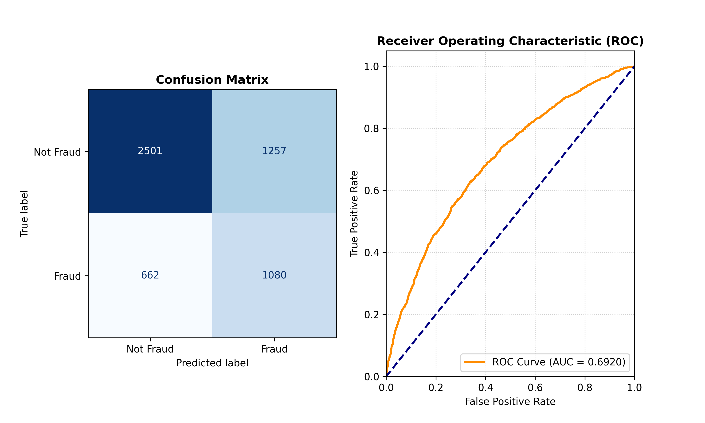

Problem Statement
Electoral fraud detection is a high-stakes classification problem involving highly imbalanced data. The objective is to identify fraudulent voting patterns using structured electoral and behavioral features, while minimizing false negatives due to the critical nature of undetected fraud.
Dataset
The dataset consists of synthetic electoral behavior features including vote distribution ratios, polarization indices, turnout timing patterns, and EVM vs postal vote proportions. The target variable is a binary classification label indicating fraudulent or legitimate elections.
Methodology
The project follows a standard supervised machine learning pipeline including data cleaning, feature engineering, and model training. Multiple models were evaluated including Logistic Regression, Random Forest, Gradient Boosting, XGBoost, and a PyTorch neural network. Class imbalance was addressed through threshold tuning and performance-sensitive evaluation.
Model Comparison / Results
Models were evaluated primarily using recall due to the asymmetric cost of false negatives. XGBoost and ensemble-based methods performed best under imbalanced conditions.

Key Findings
Threshold optimization significantly improved fraud detection recall. Tree-based ensemble models consistently outperformed neural networks on tabular structured data. Feature engineering had a greater impact on performance than model complexity.
Challenges & Limitations
The dataset is synthetic, limiting real-world generalization. Class imbalance introduced evaluation instability across metrics. Limited feature diversity constrained deeper behavioral modeling.